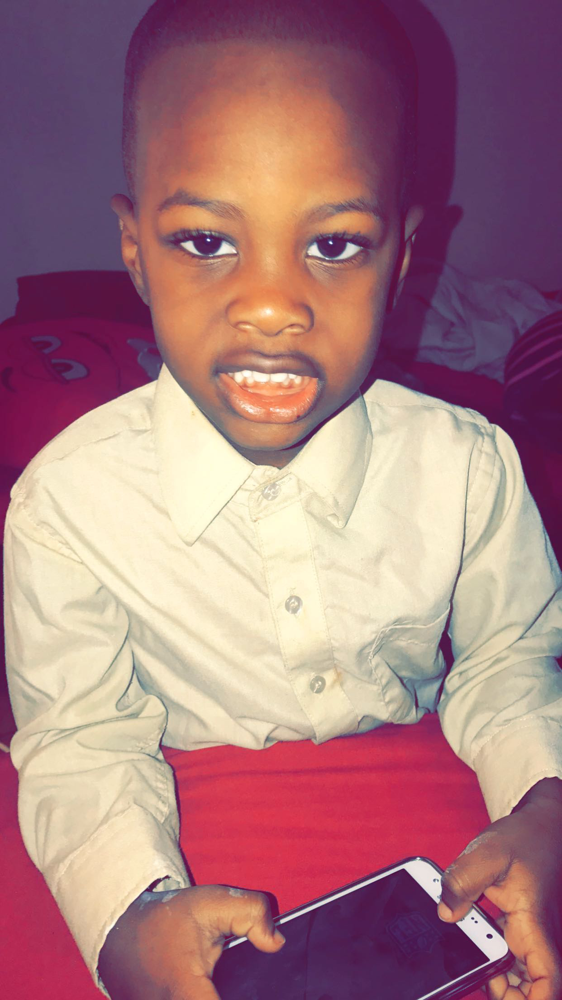
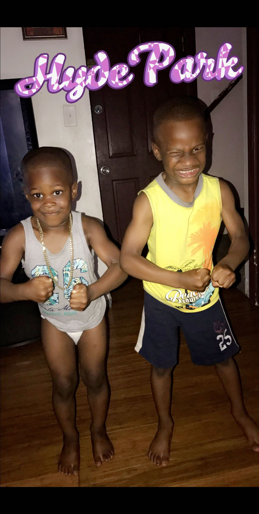

The Life of Turbo
The most important person in my life is my mother, Magalie Simon. There's no other woman like her. There are so many great traits I love and admire about my mom. She is the most hardest-working, strong, optimistic, and beautifulest lady I know. She raised five amazing boys by herself, and did a hell of a job at it. I love this woman so much. The courage to go through what immmigrants go through, and working three jobs is what motivates me everyday. My mother always puts her sons first, and I am grateful for that. Without her I would have never gotten a scholarship to play the sport that has bless me in so many ways. She pushed me so hard and kept me out of trouble. As a child, I never liked going to school but my mother refused to give up on me. I probably would have been suffocated by the nonsense that happens in my neighborhood, if it wasnt for my mother. She is my hero. My mother is my greatest influence. She supports me, and the decisions I make, showed me that success comes from hard work, she inspires me and taught me to always believe in myself.

IT’S IMPORTANT THAT WE DEVELOP TIES AND BONDS THAT CANNOT BE BREAKABLE.
Often kids decide to join gangs because they feel welcomed to be apart of a family/click. Therefore I make sure my cousins know they have me here for anything. The sacrifices that my family has done for me, is why I am in the position I am today. Therefore, it’s only right to keep this legacy going. “Family is all we got.”
I love to spend time with my family. My uncle used to always scold that "Family bonding" is very important. Its importhat that we develop ties and bonds that cannot be breakable. Often kids decide to join gangs becuase they welcome them in, to be a part of their family. so I make sure my cousins know that they have me here. The sacrifices that my family has done for me, is why I am in the position I am today.
My little cousins, Peter-Scott and Eathon are my world. I am a father figure to them, so I love them like my own. There father past so I am glad God uses me as a role model/father figure for these two wonderful boys. They are so smart and full of joy. They put a smile to my face everytime I see them.



On the other hand, they also helped me learn numerous things about myself. I’ve learn that everything I do matters. My cousins watches everything I do, and tries to emulate me. So if I get in trouble they most likely going to follow under my footsteps. Also I’ve learn to choose my words with the utmost care whenever I’m angry. There has been many occasions where I wanted to say what’s on my chest, but couldn’t because I knew it was impossible to take the words back once they’ve been said. Lastly, I’ve learned that I can’t protect anyone from the ugliness of the world. The same way my mother or older brothers couldn’t protect me from it either. There are going to be times when I’m not around, so it’s crucial for me to teach p and e how to defend themselves.
- About Me
- Teenage Years
- Family
- My Why